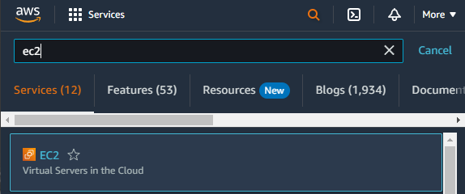
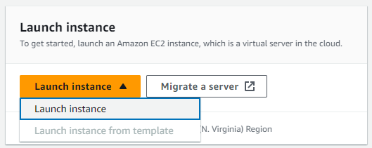
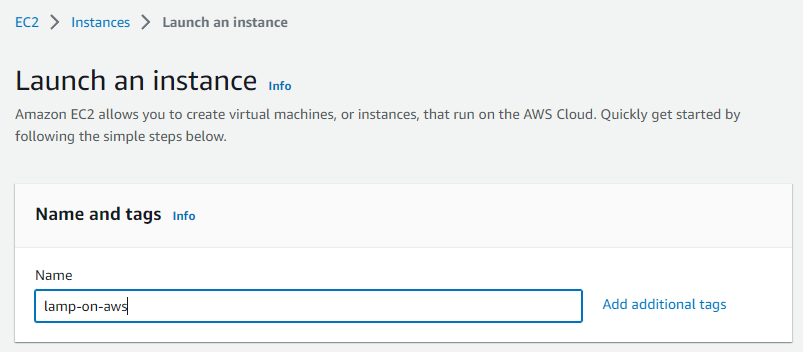
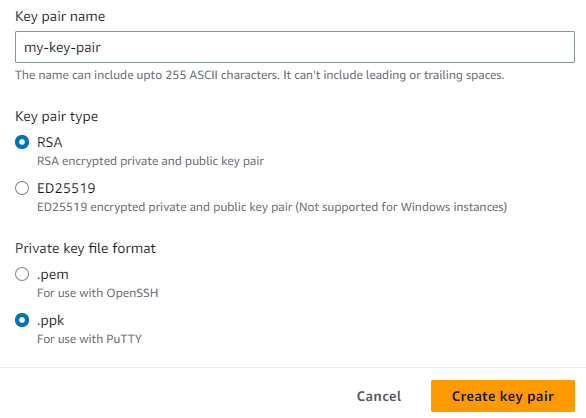
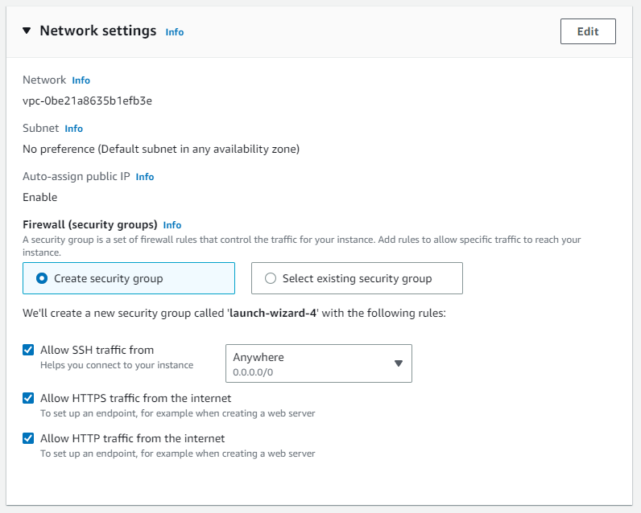
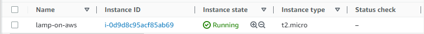

1. Setting up an EC2 instance
1.1 Creating the instance
First, go to your AWS management console and look for the EC2 dashboard
Look for the Launch instance section and click on the "Launch instance" button
Now we need to configure the AWS instance settings, you can choose any name you'd like, for the purpose of this guide I'm going to call it "lamp-on-aws"
For the image I'm going with Ubuntu x64. You could choose any other linux-based distro if you want i.e: Amazon Linux, but some packages that are going to be used later may be missing from the distro, so Ubuntu is recommended for this guide.
The next section is going to ask you for an Instance type, you can choose anything here. Since I'm using the AWS Learner Lab I'm going with the Free tier eligible t2.micro instance type.
Now you need to create a key pair for SSH authentication, click on "create new key pair". I'm going to use PuTTY so a .ppk key file is needed. Create the key and then download it to your machine.
In the Network settings for the purpose of this guide we'll allow SSH, HTTPS and HTTP traffic from anywere, which usually is not recommended for security reasons
The configuration is complete! Your instance will now be visible from the instances panel. You can click on the instance ID to see a summary of the instance containing data that we'll use later for the SSH connection.
1.2 Running & connecting via SSH (with PuTTY)
Open PuTTY and go into the Connection/SSH/Auth/Credentials section. Here you need to insert your private key for SSH authentication.
Then open the Session section. Here you need to insert the public IPv4 of the EC2 instance that you can find in the Instance summary. The port for SSH is 22.
Press the "Open" button to start the SSH connection.
You will be asked for a login username, by default the Ubuntu AMI image uses ubuntu so enter that.
You are now SSH'd into a computer somewhere else in the world, but it doesn't do anything cool yet. Go onto the next step to set-up a LAMP stack to create a webpage
2. Setting up LAMP